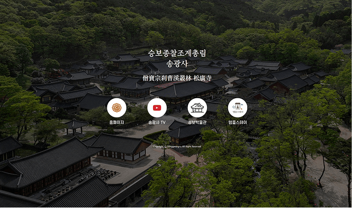

사찰의 곳간과 신도의 공덕을 지켜주는
신도 관리 프로그램
신도 관리 프로그램
데이터는 안전하게,
기도비는 투명하게,
종무소는 더 편리하게!

상담 문의 안내

사찰 행정의 새로운 기준
사찰 행정의 새로운 기준, 수비라 신도관리를 경험해 보세요.


수비라 출력물 안내 더보기
접수된 기도의 다양한 출력을 지원합니다.

연등 꼬리표 노란색
(양면)
폭 19cm x 높이 22.4cm
연등꼬리표


위패 극락왕생 컬러
(양면)
폭 3.6cm x 높이 14.4cm

위패 극락왕생 흑백
(단면)
폭 3.6cm x 높이 14.4cm

기부금 영수증
폭 19cm x 높이 22.4cm

축원문
폭 19cm x 높이 22.4cm

천혼문
폭 19cm x 높이 22.4cm
출력물


축원+천혼
폭 19cm x 높이 22.4cm

영가 천혼문
폭 19cm x 높이 22.4cm

제사 위패
폭 19cm x 높이 22.4cm
사찰 홈페이지 제작 더보기
수비라가 만드는 사찰 홈페이지는 다릅니다.
-

송광사
-

능인 대학원 대학교
-

명상상담평생교육원
-
대한불교 조계종 모바일 신도증
-
도반문자
-
템플스테이 웹진
문의 및 상담
상담 신청하기
연락처를 남겨주시면 확인 후 빠르게 연락드리겠습니다:)